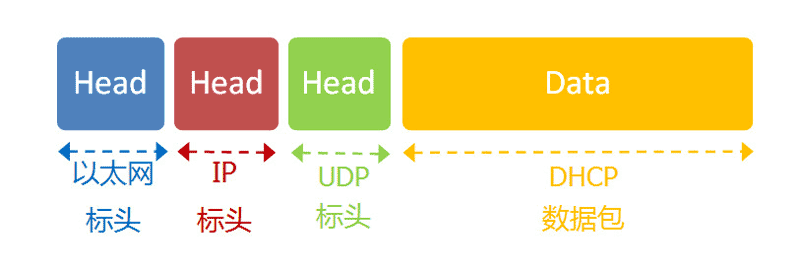

五层网络模型
应用层：应用程序的数据格式、数据内容。（数据来源）
传输层：UDP协议/TCP协议、系统端口、应用端口。(进程到进程之间的通信)
网络层：IP协议、分配IP地址、确定子网络。（网络到网络的通信）
链接层：以太网协议、MAC地址、子网广播。（同一子网络内的内部通信）
实体层：也是物理层、信号传播介质、如线缆。（传播介质）
网络数据包结构
如下精简步骤，反映了互联网通信的基本原理
（一）DHCP协议-联网
通过DHCP协议进行广播，在内网获取内动态Ip、子网掩码、网关IP、DNS的IP后，可以联网啦.

无论是动态IP，还是静态IP，想要联网都必须设置如下参数（参数值以实际为准）
* 本机的IP地址：192.168.1.100
* 子网掩码：255.255.255.0
* 网关的IP地址：192.168.1.1
* DNS的IP地址：8.8.8.8
DHCP协议过程
（1）最前面的"以太网标头"，设置发出方（本机）的MAC地址和接收方（DHCP服务器）的MAC地址。前者就是本机网卡的MAC地址，后者这时不知道，就填入一个广播地址：FF-FF-FF-FF-FF-FF。
（2）后面的"IP标头"，设置发出方的IP地址和接收方的IP地址。这时，对于这两者，本机都不知道。于是，发出方的IP地址就设为0.0.0.0，接收方的IP地址设为255.255.255.255。
（3）最后的"UDP标头"，设置发出方的端口和接收方的端口。这一部分是DHCP协议规定好的，发出方是68端口，接收方是67端口。
这个数据包构造完成后，就可以发出了。以太网是广播发送，同一个子网络的每台计算机都收到了这个包。因为接收方的MAC地址是FF-FF-FF-FF-FF-FF，看不出是发给谁的，所以每台收到这个包的计算机，还必须分析这个包的IP地址，才能确定是不是发给自己的。当看到发出方IP地址是0.0.0.0，接收方是255.255.255.255，于是DHCP服务器知道"这个包是发给我的"，而其他计算机就可以丢弃这个包。
接下来，DHCP服务器读出这个包的数据内容，分配好IP地址，发送回去一个"DHCP响应"数据包。这个响应包的结构也是类似的，以太网标头的MAC地址是双方的网卡地址，IP标头的IP地址是DHCP服务器的IP地址（发出方）和255.255.255.255（接收方），UDP标头的端口是67（发出方）和68（接收方），分配给请求端的IP地址和本网络的具体参数则包含在Data部分。
新加入的计算机收到这个响应包，于是就知道了自己的IP地址、子网掩码、网关地址、DNS服务器等等参数。
（二）DNS协议-域名解析为IP
DNS协议可以帮助我们，将这个网址www.google.com转换成IP地址。已知DNS服务器为8.8.8.8，于是我们向这个地址发送一个DNS数据包（53端口）。然后，DNS服务器做出响应，告诉我们Google的IP地址是172.194.72.105。于是，我们知道了对方的IP地址。
(三)子网掩码-计算通信目标是否在同一子网内
本机IP和子网掩码进行AND运算得A，目标IP与子网掩码进行AND运算得B，若A=B，则在同一子网络，否则不在同一子网内，向上游网关转发寻找；
例如：已知子网掩码是255.255.255.0，本机用它对自己的IP地址192.168.1.100，做一个二进制的AND运算（两个数位都为1，结果为1，否则为0），计算结果为192.168.1.0；然后对Google的IP地址172.194.72.105也做一个AND运算，计算结果为172.194.72.0。这两个结果不相等，所以结论是，Google与本机不在同一个子网络。
因此，我们要向Google发送数据包，必须通过网关192.168.1.1转发，也就是说，接收方的MAC地址将是网关的MAC地址。
(四)ARP协议-若在同一子网内，获取对方MAC地址，即可通信
通过ARP协议获取同一子网内的电脑的MAC地址获取
如果两台主机在同一个子网络，那么我们可以用ARP协议，得到对方的MAC地址。ARP协议也是发出一个数据包（包含在以太网数据包中），其中包含它所要查询主机的IP地址，在对方的MAC地址这一栏，填的是FF:FF:FF:FF:FF:FF，表示这是一个"广播"地址。它所在子网络的每一台主机，都会收到这个数据包，从中取出IP地址，与自身的IP地址进行比较。如果两者相同，都做出回复，向对方报告自己的MAC地址，否则就丢弃这个包。

总之，有了ARP协议之后，我们就可以得到同一个子网络内的主机MAC地址，可以把数据包发送到任意一台主机之上了。